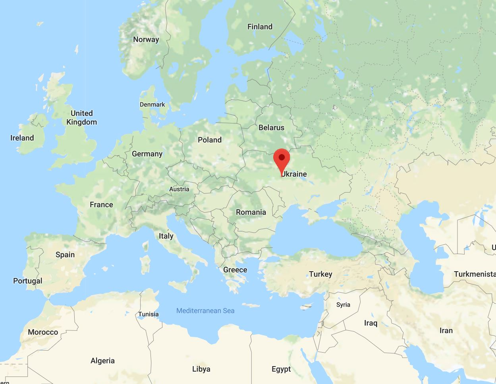
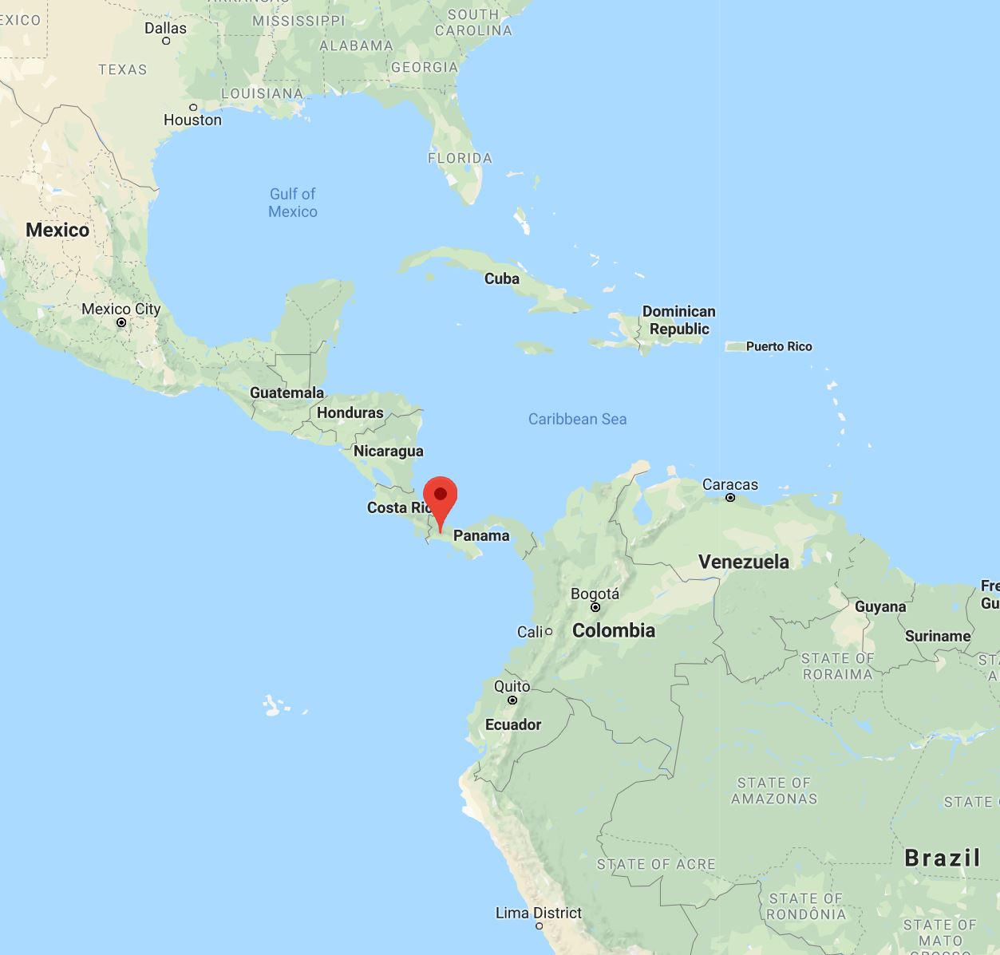

ARTIOM LEZCANO KORETSKI
Multilingual professional with double degree in Computer Engineering and Computer Science. Graduated from the University of Arkansas with experience in both hardware and software development (Mobile, Web and more)
"I love cutting edge Technology when used for good"
EDUCATION
2013 - 2017 | University of Arkansas | Fayetteville, Arkansas, United States ~ GPA: 3.42/4.0

Bachelor of Science in Computer Engineering

Bachelor of Science in Computer Science
Minor in Mathematics and International Business
2000 - 2011 | Primary and Middle School
I.P.T. Dr. Arnulfo Arias Madrid - Chiriqui, Panama

Secondary School Diploma in Computer Science ~ GPA: 4.7/5.0
Oratov School - Oratov, Ukraine

Primary School 2nd Grade
Vidal B. de Barroso - Chiriqui, Panama

Primary School Dimploma
CERTIFICATIONS
SKILLS
PROGRAMMING
trending_up
ADVANCED
Java, Kotlin
Robolectric, MockK, Mockito
done_all
INTERMEDIATE
Dart, Swift, Ruby, SQL, C#, C++, C, Verilog
Rails, Jasmine, RSpec, Blue Steel, Data Frames
done
NOVICE
Objective C, JavaScript, VHDL
HTML, CSS, Materializecss, Bootstrap, Haml
GENERAL SKILLS
language
LANGUAGES
Fluent in English, Russian and Spanish
Intermediate Level of Ukrainian
Willing to learn More languages
cloud_done
THE CLOUD
Google Cloud Platform, Firebase, Amazon Web Services and Microsoft Azure
devices_other
ADDITIONAL TECHNOLOGIES
GitHub, Azure DevOps, Jenkins, Crucible, JIRA, Asana, Trello and Google Play Console
WORK EXPERIENCE
-
Nov 2018 – Present | Solutions Architect | Copa Airlines | Panama
Design, implement and lead teams to the successful completion of enterprise projects
Collaborate with clients, business analysts and developers to define project requirements to thereafter translate them into workable epics, stories and tasks
Suggest Architectural Improvements by formulating strategic plans for component development in a sustainable manner
Estimate work, assess technologies and prototype initiatives
Led a random team to win the first place of an internal Google Cloud Hackathon competition
-
Jul 2017 - Aug 2018 | HealtheLife app - Android, IOS and Web Application | Cerner, Health Information Technology Solutions | United States
Added and improved features in Android, iOS and Ruby on Rails applications
Constantly looked for ways to enhance features or predict issues within the applications
Estimated the work needed for specific features and enhancements
Created story requirements and technical designs for such features and enhancements
Reviewed code written by teammates to ensure fulfillment of its requirements, advocate for improvements and verify previous features functionality
Tested application features before and after deployment and helped with deployments
Team based work always towards the end goal objectives
-
Jun - Jul 2017 | Web Application to evaluate Cerner’s solutions health statuses | United States
Met with the stakeholder to gather Functional Requirements
Divided Functional Requirements into Technical Requirements, Stories and Tasks
Worked on both Front and Back-End, SQL DB Schema and Active Record Migrations
-
Aug - Nov 2011 | Computer Technician | C.S.M. Computers | Panama
Repaired Computers and Laptops both Hardware and Software
-
Jan - Mar 2011 | Spanish - Russian Translator | Duero Latina - Hydropower Plant P.H. Bajo de Mina | Panama
Worked with Hydro Turbine, Electrical and Mechanical Engineers on the assembly of the turbines by translating everything the Engineers would say to one another.
PROJECTS
-
Oct 2018 – Present | Control IOT devices from anywhere through Cross Platform Mobile App
Flutter (iOS and Android)
Google Cloud Functions
Firebase Authentication
Firebase Real-time database
Firebase Analytics
-
May 2018 - Sep 2018 | React Web Application | Reusable skeleton for future projects
React-redux to manage app state
React-sagas to manage asynchronous calls to the Firebase Cloud
React-router to simplify domain paths
Bootstrap and Material-UI for UI design
Clean Architecture based
-
Jun 2016 - Mar 2018 | Android Task Manager App | Personal Project done on my Spare Time
Visit Google Play Store: 4WardZ for details
First written in Java and then converted to Kotlin
Internationalized to English, Spanish and Russian
Using a MVP architectural pattern and a SQLite DB, the app creates, edits and stores Missions as to-do tasks
Material Design, Multi-threading, Notifications +21 SDK including Oreo, Constraint Layouts, Image Vectors...
Database Architecture based
-
Aug - Dec 2016 | CAGE Distance Framework & Country Portfolio Analysis – International Management
Implemented a Country Portfolio Analysis and CAGE Distance Framework in other countries to explore possible investments
-
Jun - July 2016 | Country Risk Assessment – International Finance
Analyzed the risks associated when investing in other countries
-
Jan - May 2016 | Android, Bus Tracking Application
Allows users to track in real time University Busses using Google Maps
Widget which displays the remaining time for the next bus to a specific bus stop
-
Aug - Dec 2015 | Android, Selling Application - Software Engineering
Allows users to buy products stored in a database